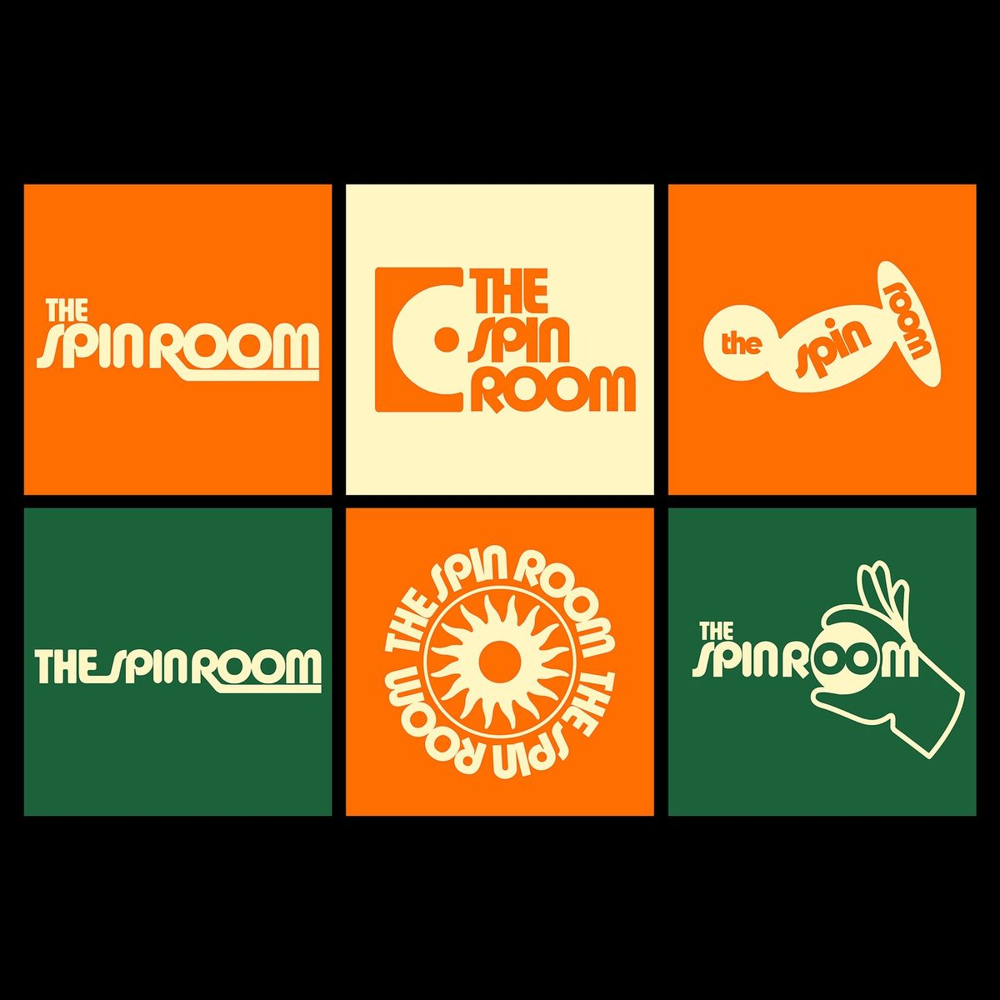
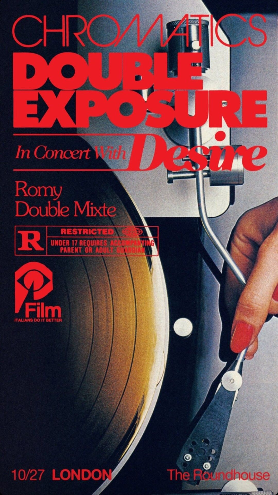
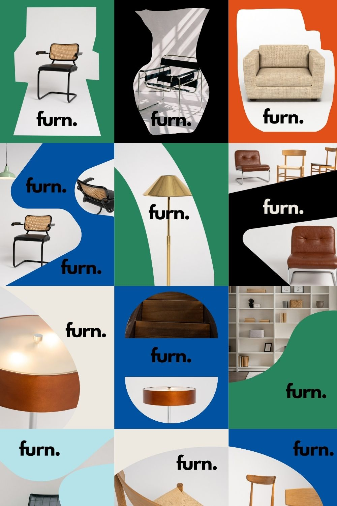
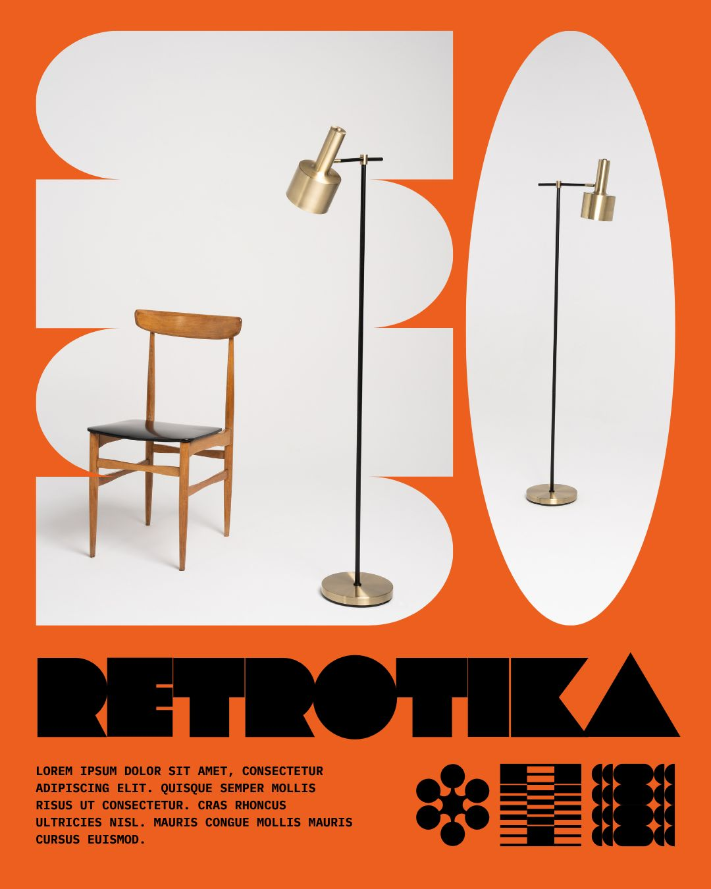
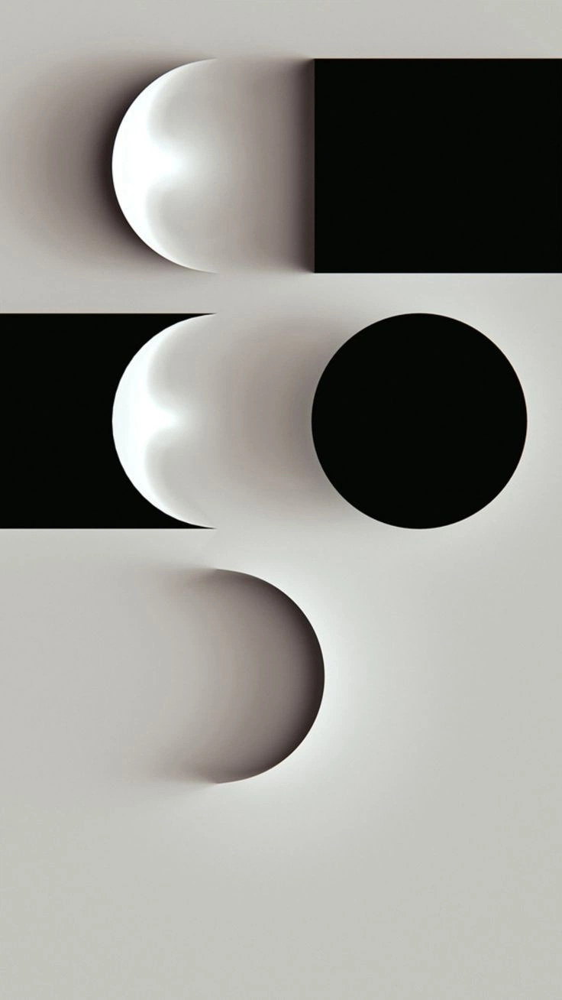
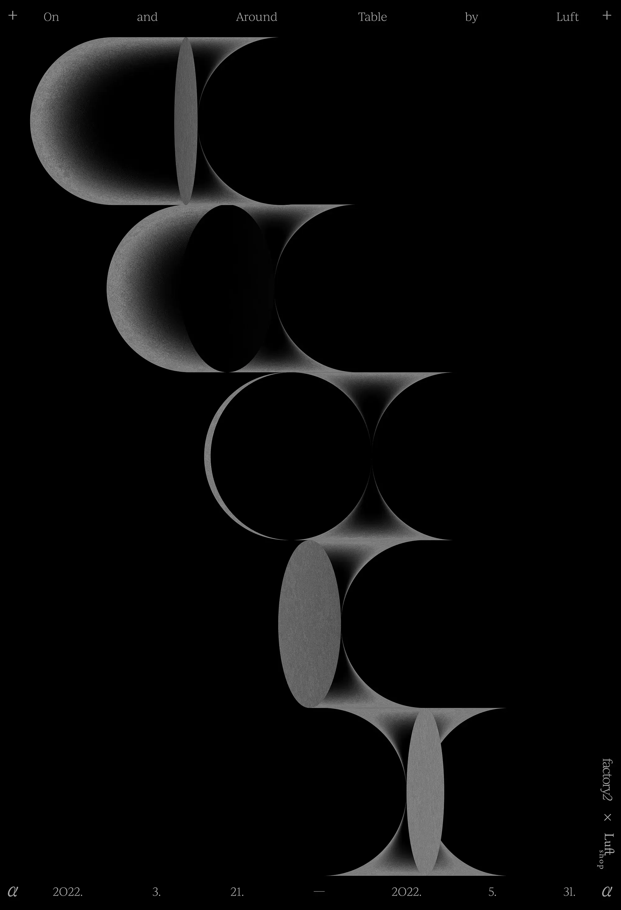
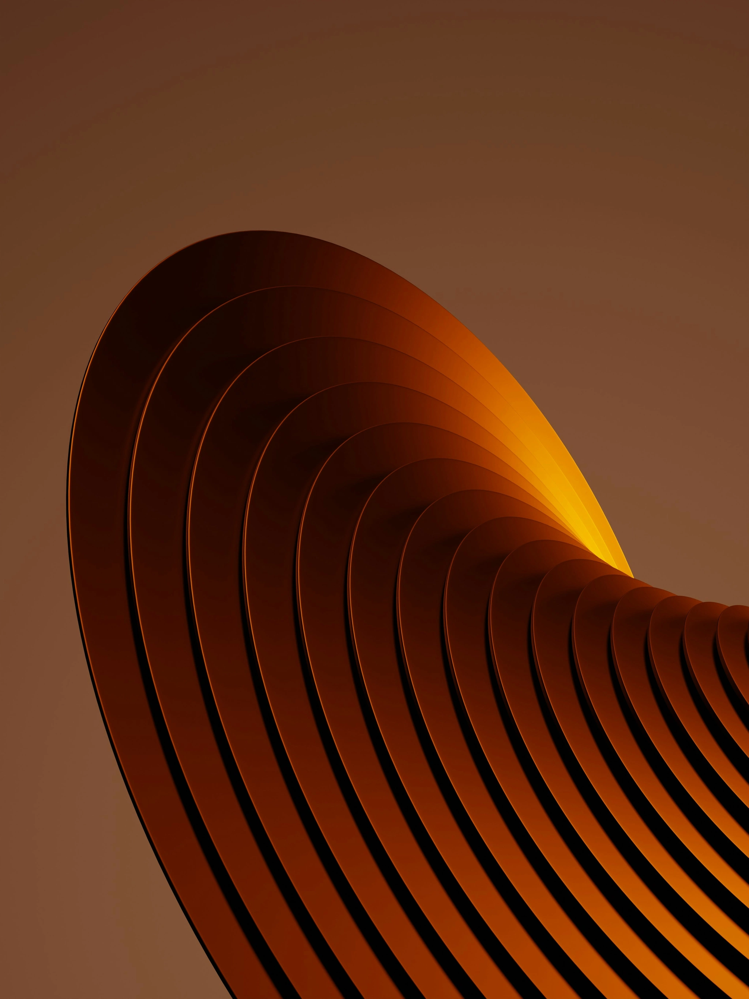
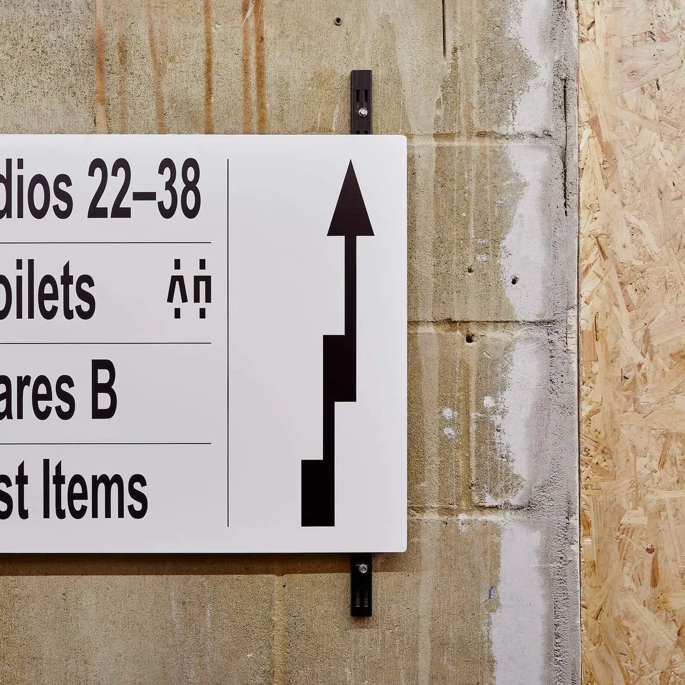

Multiuse
Lunge
멀티유즈 라운지 · 네이밍 미정
합정역 앞 3층, 디자인 가구로 채운 멀티유즈 라운지의 브랜딩 & 디자인 시스템.
사업 개요
합정역 앞
마포구 합정동 3층. 홍대·상수·망원 인접, 디자인 감수성 높은 2030 밀집.
52.49㎡
약 15.9평. 라운지 존 + 룸 존. 바닥 시공 42.9㎡(워시 오크).
멀티유즈 라운지
사무실 · 요가 클래스 · 소개팅·모임으로 자유롭게 전환되는 라운지.
모던 + 우드 텍스처
모던 디자인 가구가 만드는 따뜻한 큐레이션.
확정 ✅ 층고 약 2m(낮은 편) · 운영모델 무인 자동화(모회사 Space 시스템 구축 중) · 대기 ⏳ 가격대 [대기]. 가격 확정 전까지 포지셔닝 톤은 무드 기반 잠정 프리미엄 폴백.
한 문장 정의
비어 있어서 무엇이든 될 수 있지만,
늘 따뜻한 멀티유즈 라운지.
무미건조한 대관 스튜디오와 달리, 디자인 가구로 큐레이션된 라운지라 어떤 모임을 가져와도 이미 분위기가 완성되어 있습니다.
변하는 것 / 변하지 않는 것
사무실 · 요가/원데이 클래스 · 소개팅·소셜 모임 · 촬영 · 소규모 파티. 한 공간이 타입별로 재구성.
절제된 큐레이션, 편안한 라운지감. 디자인 클래식 가구가 분위기를 미리 만들어 둔다.
“분위기는 하나, 용도는 여럿 — One mood, many uses.”
왜 이 공간인가
빈 화이트박스가 아니라, 디자인 가구가 분위기를 미리 완성. 세팅 노동이 없음.
가벽·확장 테이블·가변 좌석으로 한 공간이 타입별로 재구성됨.
약속·모임 잡기 쉬운 합정 입지. 단, 3층이라 사이니지가 발견의 장치.
아무 가구가 아니라 고른 가구. 디자인 소양이 곧 브랜드 신뢰.
셋의 쓰임, 하나의 라운지
운영모델 무인 자동화(스태프 없는 셀프 이용) → 사이니지 자가안내가 중요. 3종 페르소나 동등 가중, 각 타입 시나리오와 1:1 대응.
집중하는 라운지
JTBD 카페보다 사적인, 분위기 좋은 작업 공간.
기대 — 좋은 책상, 조용함, 시간 단위 결제, 콘센트·와이파이.
비우면 스튜디오
JTBD 가구를 빼면 매트를 깔 수 있는, 사진 잘 나오는 공간.
기대 — 가변 레이아웃, 따뜻한 조명, 전신거울.
둘러앉는 라운지
JTBD 어색하지 않게 대화가 트이는, 우리끼리 편한 자리.
기대 — 라운지 소파·데이베드, 무드 조명, 프라이버시.
공통 인사이트 — 셋 모두 “분위기는 이미 완성, 나는 콘텐츠만”. 시간대가 달라(낮·저녁·주말) 가동률 순환 설계 가능.
모던 · 우드 텍스처
무드는 핵심 2개로 압축. 블랙 가죽·크롬·페이퍼·리드드 글라스는 가구의 부수 요소일 뿐, 브랜드 무드의 헤드라인이 아니다.
디자인 클래식의 형태 언어
바실리·바르셀로나·핀율·프루베·임스·알토풍 — 큐레이티드 라운지. 바우하우스 DNA.
오크·자작·고무나무의 따뜻한 결
라이트 우드 + 블랙 가죽 + 크롬 + 웜 페이퍼/린넨의 재질 팔레트.
기하 그래픽 — 볼드하되 정제됨
지향 (V1–V5)
- 볼드·웜 — 자신감 있는 따뜻한 원색, 큰 조형
- 기하 — 원·사각·블롭의 또렷한 도형(바우하우스)
- 정제 — 볼드하되 난잡하지 않은 스위스적 질서
- 재질감 — 우드의 실제 질감
- 위트 — 둥근 O·태양 같은 작은 재치
회피 (X1–X5)
- 차가운 테크 미니멀(SaaS 화이트)
- 그루비·사이키델릭·흐물 레터링
- 뮤트·소심한 파스텔 일색
- 디테일 과잉·러스틱 장식
- 납작한 플랫·재질 없는 일러스트
디지털·마케팅(인스타·포스터·웹)은 컬러블록 과감하게. · 공간 사이니지는 블랙·화이트 재질 중심으로 차분하게 — 가구를 이기지 않도록.
레퍼런스 — 충돌 셀 0




코어 무드(우드 텍스처) ↔ 비주얼 형용사 1:1 매핑 → 충돌 0개 = 게이트 통과. furn.·RETROTIKA(정제된 볼드)를 앵커로, 그루비 레터링은 제외(가구와 톤차 방지).
좋은 안목, 으스대지 않는 호스트
“오셔서 편하게 쓰시면 돼요. 분위기는 저희가 준비해 둘게요.”
↔ 과장된 친근함·오버 텐션 ✕
“비어 있어서, 무엇이든 될 수 있어요.”
↔ 미사여구·형용사 남발 ✕
”디자인 가구로 골라 채웠어요. 앉아보시면 알아요.”
↔ 브랜드명 나열·지식 자랑 ✕
“넓진 않지만, 그래서 오히려 아늑해요. 6~8명 모임에 좋아요.”
↔ 공허한 완벽 약속 ✕
격식체 존댓말 + 대화적 어미(~거든요·~지요). 느낌표 절제, 가구 제품 고유명 직접 차용 금지.
‘멀티유즈 라운지’가 드러나는 이름
방향 전환 — 하우스오브는 사무실 용도가 배제되는 느낌, 모듈룸은 발음·검색이 어려움 → 둘 다 보류. 멀티유즈 라운지 컨셉을 더 직접적으로 담는 후보로 확장(음절 제한 없음).
| 신규 후보 | 왜 멀티유즈 라운지인가 |
|---|---|
| 무드룸 MOOD ROOM | “분위기는 하나”를 이름에. 용도가 바뀌어도 무드는 하나 — 컨셉 직결. 발음·검색 쉬움, ‘O’ 로고 적합. ★ 추천 |
| 타입라운지 TYPE LOUNGE | ‘type’(WORK·CLASS·GATHER — 한 공간의 여러 쓰임) + ‘lounge’(정서·공간)를 직접 결합. 멀티유즈 라운지를 가장 명시적으로 표현 |
| 레이어 LAYER | 한 공간에 여러 쓰임이 ‘겹쳐’ 있음. 로고의 겹침 모티프와 시너지 |
| 모도 MODO | 이탈리안 ‘방식/무드’. 기하 톤, 짧고 변별력 높음 |
오브룸 OVE ROOM — 오브제가 놓인 감도 있는 방, ‘O’ 모티프.
오빗 ORBIT — 60s 우주시대 원형 모티프(변별력↑).
🟡 결정 보류 — 마음 가는 2~3개를 상표(KIPRIS 43류)·도메인·인스타 핸들 라이브 확인 후 압축. 비주얼 예시는 name-agnostic(이름 바뀌어도 시스템 유효).
메인 · 엑센트
브랜드 식별 3색 — 메인 + 엑센트
배경·텍스트의 기본 토대. 브랜드를 차분하게 떠받치는 두 색.
’O’/태양과 직결되는 시그니처 한 색. 컬러블록·로고·강조에만.
색이 아니라 실제 재질(블랙·화이트). 사진·공간 사이니지의 질감으로 쓰임.
레드는 오렌지와 겹쳐 제외. HEX/RGB는 디지털 확정값, CMYK/Pantone은 근사 — 발주 전 실물 스와치 확인. 오렌지는 작은 본문 색 금지(대비).
기하 산세가 주인공
Aa Gg
League Spartan · Black
디스플레이(로고·헤드라인) — 푸투라 계열, 바우하우스 직계. 국문 Pretendard Black / G마켓산스.
본문은 Pretendard
국·영문 한 가족으로 통일(고가독). 본문 최소 16px.
대문자 · 가운뎃점 구분 · 컬러블록 위 화이트/잉크. 강조는 굵기·컬러블록으로(밑줄·그림자·이탤릭 금지).
⚠️ 로고가 확정되면 디스플레이 폰트도 로고 레터링에 맞춰 변경될 수 있습니다(현재는 방향값).
‘O’ = 태양 · 원 · 겹침
겹치는 원 = 멀티유즈
- ‘O’/해를 완전한 원으로 — 바우하우스 기하 + 노구치 램프/태양의 기하 곡선. 광선 디테일은 절제.
- 겹침(overlap)을 핵심 장치로 — 여러 쓰임이 한 공간에 포개진 멀티유즈를 형태로 표현.
- 변형 — Primary 가로 / Stacked / Symbol only / Location lock-up.
- 금지 — 그루비 변형, 비율 왜곡, 팔레트 외 색, 가구 고유명 결합.
네이밍 미정 — 'O'가 들어가는 이름(무드룸·오브룸·오빗 등)과 특히 잘 맞음. 벡터 제작은 승인 후.
겹침으로 표현하는 멀티유즈
원·도형이 겹쳐지며 생기는 형태 — 하나의 공간에 여러 쓰임이 포개진다는 컨셉을 로고/그래픽 언어로.



방향 — 단색·고대비 기하(좌·중)로 ‘겹침’의 구조를, 웜 톤(우)로 ‘재질감’을 가져온다. 그루비 배제, 바우하우스·노구치 곡선 유지.
찾아오게 만드는 동선
3층 입지 = 1층 노출 없음 → 사이니지가 “발견의 장치”. 층고 약 2m(낮은 편) 확정 → 사인 높이·돌출 규격에 반영, 절대치수는 입면 실측 후 확정.
- 블레이드(돌출) 사인 — 길에서 3층 인지, 야간 백릿
- 창문 사인 — 무드 노출 + 타입 태그
- 1층 디렉토리 — 끊김 없는 동선 유도
- 입구 사인 · 타입 안내판(교체형 카드)
- 이용 가이드 · 웨이파인딩 · 에티켓
- 픽토그램 — 24px 라인, 라벨 병행 필수
길 위 → 블레이드 → 입구 디렉토리 → 엘리베이터 → 3F 입구 사인 — 한 번도 끊기지 않게.
도형으로 만든 방향
브랜드 무드에 맞게 기하 도형을 활용한 화살표와 컬러블록의 겹침으로 길찾기를 표현. 콘크리트·우드 같은 실제 재질 위에 차분하게.


① 컬러블록을 겹쳐 위계를(층·구역).
② 화살표·픽토는 도형 조립으로.
③ 콘크리트·우드 실제 재질을 배경으로 — 가구를 이기지 않게.
무인 자동화 운영이라 스태프 없는 자가안내가 핵심 — 도형·컬러블록만으로 직관적으로 읽히게.
세 타입, 세 시나리오
집중하는 라운지
와이파이·콘센트 안내, “통화는 복도에서” 정숙. 다이닝테이블/데스크 + 프루베풍 체어.
비우면 스튜디오
가구 재배치 가이드(가벽·스툴을 벽으로), 전신거울, 매트 구역·동선 확보.
둘러앉는 라운지
라운지 소파·데이베드·확장 테이블, 무드 조명. 안내는 작은 카드로 최소.
타입 안내판(I-2)은 카드 슬롯/마그넷 교체형 — 운영자가 카드만 바꿔 타입을 전환. WORK/CLASS/GATHER 3종 사전 제작.
디자인 토큰이란?
색·글자·간격 같은 디자인 값을 숫자로 규격화한 ‘디자인 부품 목록’입니다. 누가 만들어도(웹·인쇄·간판) 같은 결과가 나오도록 하는 단일 기준이에요.
엑센트/오렌지 = #E2531E
“오렌지”라고 말로 하지 않고 정확한 코드로 고정.
헤드라인 = 56px / League Spartan
크기·폰트·행간을 규격으로.
기본 간격 = 8 · 16 · 24px
여백을 8px 배수로 통일.
화면용 값 HEX/RGB — 컬러블록 과감 + 기하 산세 디스플레이.
인쇄·제작용 값 CMYK/Pantone·재질 — 블랙·화이트 재질 중심(차분).
한 줄 요약 — 토큰이 있으면 “이 오렌지 맞아?” 같은 혼선 없이, 모든 제작물의 색·글자·간격이 자동으로 같아집니다.
지금 어디까지
확정 ✅ 층고 약 2m · 운영모델 무인 자동화 · 대기 ⏳ 가격대 · 네이밍 최종 확정.
로드맵 네이밍 확정 → +1주 로고·픽토·사이니지 디자인 → +2주 brand · bx · product · ux 문서 작성·배포.
가져오기만
하세요.
분위기·가구·세팅은 이미 준비됨. 다음 단계는 — ① 네이밍 좁히기(상표·도메인 라이브 확인), ② 네이밍 확정 → 다음 주 로고·픽토·사이니지 디자인, ③ 그 다음 주 brand · bx · product · ux 문서 작성·배포.
하나의 공간, 당신의 쓰임.